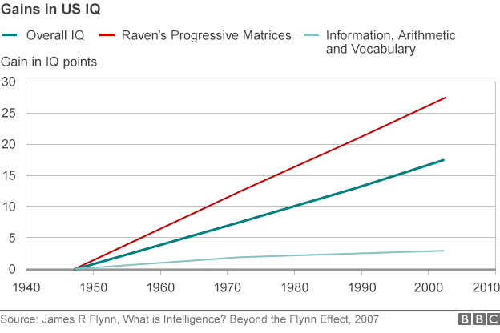

utenstat.no
utenstat.noKritisk tenkning
12. november 2016 | Sondre Bjellås
Kritisk tenkning er ikke noe som kommer naturlig, man må jobbe og forbruke energi for å opprettholde det kritiske tankesettet.

Forskning viser at barn har en iboende egenskap til å tro på det man blir fortalt, av autoritet, som foreldre.
(Legg merke til hvordan jeg spesifikt påstår at forskning viser noe, hvis noen gir deg en slik påstand, bør den normalt følges opp med referanse til den aktuelle forskningen. I dette tilfellet er det noe jeg har lest i en bok for ganske lenge siden, og det er ikke mulig å huske alle detaljer til alle fakta og referanser man lærer gjennom livet. Det er derfor kritisk tekning er viktig, for å unngå at man plasserer feilaktige opplysninger og fakta i hodet sitt, og bruker dette når man tenker.)
Det er for meg (vet ikke om det er det for deg) logisk å anta at når vi blir voksne, så forsvinner ikke vår evne til å naturlig tro på det vi blir fortalt av dem vi stoler på, venner, familie, ledere.
(Dette er min påstand, ikke en jeg nødvendigvis kan støtte opp med referanse til forskning. Jeg kunne valgt å lete etter kilder til påstanden, men her er den så svak (det er min mening, ikke en bastant påstand at dette er hva forskning viser) at jeg anser ikke energien det tar å søke opp en kilde, som verdt arbeidet i dette tilfellet.)
Når vi ikke lengre stoler på hva vi blir fortalt, må vi begynne å bruke mer energi på å analysere det som blir sagt. Det tar på krefter, og det vil du kunne erfare selv hvis du har noen venner, bekjente eller familiemedlemmer som er notoriske løgnere. Hvis dette er mennesker du har tatt i løgn og halvsannheter gjentatte ganger, vil du ikke lengre klare å stole på hva de forteller, helt uten videre.
Jeg er ingen vennskapsrådgiver, men personlig ville jeg valgt å kutte et vennskap med noen som er notoriske løgnere og som hele tiden har en underliggende agenda for hva man sier og påstår.
Stefan Molyneux er en jeg har fulgt i mange år, jeg har referert til ham flere ganger i diskusjoner og ikke minst på UtenStat. Han har gått gjennom en lang transformasjon fra hvor han opprinnelig startet, til hvor han er i dag hvor han har blitt en YouTuber (han har ikke helt nådd den listen enda, men det kommer nok snart).
Han har produsert flere fakta-fylte filmer-klipp hvor han systematisk går gjennom statistikker og deler kilder for noen av påstandene. Men det er klart at også Stefan Molyneux har en underliggende agenda for det han presenterer på sin YouTube-kanal.
Nylig produserte han en film som har tittelen «The Truth About America’s Survival | Demographics and the 2016 Election«, som starter med:
«Collective statements about groups, they are not biggoted if they are based in facts» … «it’s simply a statement of facts» … «but I will supporting it by facts, by all what I’m going to say».
Deretter gir han eksempler på hvordan man kan lære fakta om forskjeller mellom kvinner og menn, noe som er helt legitimit. Men det er selvsagt ikke det han har som mål med sin video, det han har som mål er å unnskylde seg selv i starten og forsøke å få lytteren til å akseptere dette premisset til å kunne gjelde for alle grupperinger av mennesker, noe som selvsagt ikke er riktig.
Stefan har gjort en god del klipp på IQ og intelligens, men hvis man ser på hvem han tar med på disse episodene, er det ganske klart og tydelig at han ikke tar noen objektive hensyn i å faktisk få dekket et emne fra flere vinkler, men kun enformet og ensrettet, fra mennesker som alle er enige, men som faktisk ikke har den nødvendige ekspertisen for hva de uttaller seg om. Mer om det en annen gang.
Han påstår også at hvis man presenterer informasjon om kollektive grupper, så er det ikke rasisme. Dette er ikke riktig, spesielt da statistikk og fakta må alltid plasseres i riktig kontekst og ikke minst bli presentert slik at det blir forstått av den som mottar budskapet. Det finnes uendelig mange eksempler på hvordan folk har brukt fakta og statistikk, som fint kan være faktuelt riktig, men som ikke forteller en sannhet, men regelrett en løgn, avhengig av hvordan budskapet blir oppfattet.
Veldig raskt eksempel på det: Hvis befolkningen i Norge som er på 5 millioner, består av 50% nordmenn og 50% svensker, og det skjer 3 drap i Norge i 2016. 2 drap er utført av nordmenn, 1 drap er utført av svensker. Kan dette gi oss fakta om svensker og nordmenn som er generelle og faktuelle?
Man kan med fakta på bordet, påstå at svensker dreper dobbelt så mange, som nordmenn, når de bor i Norge.
Det man derimot ikke kan påstå, men som jeg har opplevd ved flere anledninger, er å påstå at svensker er dobbelt så tilbøyelig til å drepe.
Det er en subtil forskjell mellom disse påstandene, og en som de fleste hverken normalt ser, eller forstår. Jeg antar at du som leser dette nå, kanskje ikke helt så forskjellen heller?
Hvis data-settet man baserer påstanden på er så lite, sammenlignet med gruppen man forsøker å avklare fakta om, så har man rett og slett ikke stort nok datasettet til å gi noen konklusjoner om fakta om individene og gruppen som helhet.
Desto mindre datasettet, desto støtter utslag og avvik kan man få i resultatet. Dette er essensielt å forstå, også når det kommer til klimaforskning og klimaskepsis som jeg kommer tilbake til i neste innlegg.
Hvis vi går tilbake til Stefan sin video, det er tydelig at han legger listen og forklarer at han kun skal snakke om fakta, og ikke noe annet. Ikke personlige meninger. Men hvis man ser på filmen hans med skeptiske ører og følger med på absolutt alt som blir sagt, og fakta-sjekker absolutt alt, vil man ikke få tid til å gjøre noe annet resten av livet sitt.
Det man derimot kan gjøre, er å bruke egenskaper vi har og som vi kan trene opp, nemlig muligheten til å forstå at noe er for godt til å være sant, og andre hint. Hvis noen påstår at de har funnet spor fra homo sapiens (mennesket) sammen med dinosaurer, så ville dette revolusjonert vitenskapen fullstendig og det ville endret vårt virkelighetsbilde fundamentalt.
Ekstraordinære påstander, krever ekstraordinære bevis.
Stefan i filmen sin, presenterer demografien i immigrasjon til USA. Han viser hvordan immigrasjon har gått ned fra Europe (etter 1940-50), og økt (fra 1950) fra Asia og Sør-Amerika.
For IQ bruker han Richard Lynn som referanse og kilde. Han forsøker å vise hvordan immigrasjon til USA nå kommer fra land med lavere gjennomsnitts IQ (i følge Lynn, jeg har ikke plass til å gå inn på IQ-forskning akkurat nå, det er utenfor poenget jeg forsøker å få frem).
Så sier Stefan følgende 27:22 ut i filmen sin, hvor han snakker om IQ nivået til diverse land:
«United States is 98, it used to be higher, but it’s been going down. I wonder if you can figure out why.»
Er dette virkelig sant? Er det slik at IQ nivået i USA har gått nedover og var høyere før? Når var det høyere? Fra når har det gått nedover?
Han slenger inn det siste i sitatet der, for å henvise tilbake til hva han allerede har presentert av «fakta» i denne saken. Han forsøker å styrke sin egen posisjon og tolkning av data, med å komme med enda en bekreftende fakta som tilsynelatende støtter hans budskap.
Stefan sitt budskap er åpenbart at folk i USA bør frykte immigranter og bør stenge grensene for immigrasjon fra land med lavere gjennomsnitts IQ, uansett hvor riktig og faktisk slike IQ-målinger er. Stefan forsøker å få dette til å fremstå som en krig for overlevelse. Dette er virkelig skumle greier, og det er ikke det eneste eksemplet på problematiske filmer han har produsert de siste årene.
Hva sier Richard Lynn sin egen data om dette med IQ-nivå i USA? Støtter Stefan sin egen kilde, Stefan sin påstand?

Hva har altså skjedd siden immigrasjonen endret demografi?
Siden da, har IQ nivået i USA gått gjevnt oppover.
Hvorvidt Stefan lyver direkte, eller om dette er noe han har blitt fortalt av de han har hatt på besøk på sin YouTube-kanal i episoder om IQ, er ikke mulig for meg å vite. Det jeg derimot velger å gjøre, er å tro at han åpenbart lyver og vet om det.
Jeg tror ikke Stefan er dum nok til å ikke sjekke dette, og han har lagd en hel rekke filmer på IQ.
(Jeg har spurt på YouTube om hva som er kilden for påstanden om at IQ har gått ned, ikke fått noen svar enda etter over en uke)
Stefan er normalt ganske flink til å gi kilder, og han gir en liste over kilder i filmen, men jeg har tydelig bevist at selv med kilder, så er det fort at de som presenterer en idé eller skal selge deg noe, om det er en filosofi, produkt, idé e.l. så må man være observant slik at man ikke ender opp med å bli lurt.
Hvis det skal vise seg at Stefan har tatt denne troen fra de som har vært på hans kanal tidligere, så burde han kanskje begynne å bli mer kritisk til hvem han tar med seg? Ikke minst kanskje bli litt kritisk i hvordan han stiller spørsmål til de som blir med?
Jeg håper det i det minste kan fungere som et godt eksempel på hvordan alle sammen, også du og meg, går rundt med mange feilaktige antagelser som vi tror er fakta og som vi bruker til å gjøre viktige avgjørelser hver eneste dag.
Hvis man først avslører én løgn hos noen, hva annet er det som også kan være løgn? Hva er sant? Hva kan man stole på?
Det er her forskning har mekanisme for å unngå løgn og feil, nemlig gjennom fagfellevurderinger («peer-reviews») hvor andre forskere og eksperter, leser gjennom vitenskapsrapporter og forsøker å reprodusere forskningsresultater og tall.
Denne mekanismen eksisterer dessverre ikke for journalister, bloggere og forfattere. Det er uhyre få som tar seg tid å fakta-sjekke hva andre skriver, men jeg har gjort det i flere år selv og avslørt flere.